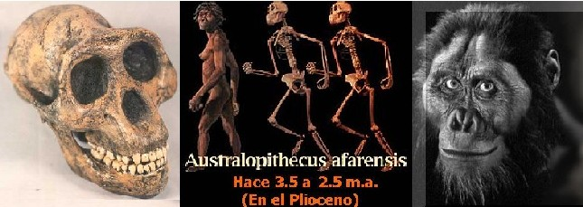

En una polvorienta región de Hadar, Etiopía, el paleoantropólogo Donald Johanson encontró en 1974 los restos de un homínido bípedo al que cariñosamente apodó Lucy. Lucy perteneció a la especie Australopithecus afarensis, si bien ya no es el australopiteco más antiguo, es de lejos la especie mejor conocida del género Australopithecus.
Las publicaciones creacionistas con frecuencia subestiman la importancia de este fósil. Por ejemplo, la propaganda de CHICK PUBLICATIONS dice sobre LUCY: “Casi todos los expertos concuerdan en que Lucy fue solo un chimpancé que midió 90 cms.”
La afirmación “casi todos los expertos” es rotundamente falsa. Los paleoantropólogos (paleontólogos que estudian el registro fósil de la humanidad) saben que los australopitecos no eran simples chimpancés. De hecho los australopitecos son la mejor prueba que los humanos descienden de seres con aspecto simiesco.
Hay muchas características que permiten afirmar que los Australopithecus afarensis NO eran chimpancés. Al comparar los maxilares superiores y las mandíbulas de un chimpancé (Pan troglodytes), A. afarensis y H. sapiens, se puede observar en las series de dientes de los primeros una forma de “U”, en los humanos la forma es de “V” y en los A. afarensis la forma es intermedia entre “U” y “V”. A parte de la forma de la serie dental es importante observar el tamaño de los caninos. En los chimpancés los caninos son grandes y cónicos, en los humanos son pequeños y en forma de espátula, mientras que en Australopithecus afarensis presentan un tamaño intermedio y ya son espatulados.

Es importante aclarar que al hacer la comparación entre humanos, afarensis y chimpancés no se está afirmando que los ancestros más remotos de la humanidad fueron los chimpancés actuales. Sin embargo, al retroceder en el tiempo se ve que las características anatómicas de los fósiles del árbol filogenético humano se parecen más a las del chimpancé, razón que lleva a los biólogos a pensar que el simio que dio origen a los primeros homínidos bípedos era parecido a un chimpancé.
Continuando con las diferencias entre chimpancés y australopitecos cabe resaltar la estructura de la pelvis y las extremidades inferiores. El estudio anatómico revela que los australopitecos tenían la capacidad de caminar en dos pies. Esto se puede saber examinando la longitud de la pelvis y el ángulo que forma el eje vertical del fémur con la superficie articular. A posturas cuadrúpedas le corresponden una pelvis larga además muestran un ángulo recto entre el eje vertical del fémur y la superficie articular, mientras que las posturas bípedas tienen pelvis cortas y ángulos cerrados. Este último caso es el de Australopithecus afarensis.

Uno de los parecidos entre los chimpancés y los Australopithecus afarensis (especie a la que pertenece el fósil “Lucy”) está en su capacidad cerebral, que en estos últimos se encuentra entre 400 y 500 c.c. Sin embargo, en el cráneo también se hallan diferencias anatómicas que revelan que los australopitecos no son chimpancés. Una de las diferencias craneales entre los Australopithecus afarensis y los chimpancés es la ubicación del foramen mágnum (el agujero por el cual sale la médula espinal), pues en los australopitecinos apunta hacía abajo, característica que además refuerza la idea de la postura bípeda de estos organismos.

Cuando los creacionistas afirman que Australopithecus afarensis es “solo un chimpancé que midió 90 cms,” están mintiendo, pues pasan por alto sus valiosos caracteres anatómicos. Por otra parte los restos fósiles de esta especie hallados en Laetoli (Tanzania) y Hadar (Etiopía) están datados en 3,18-3,4 millones de años, y los de Maka y Belohdelie (Etiopía) en 3,9 millones años, lo que ubica cronológicamente a los australopitecos como un grupo importante en la evolución humana.
El enajenamiento de los creacionistas es tal que no comprenden que las características intermedias de los australopitecinos y su ubicación cronológica son pruebas contundentes de la evolución humana. El libro “En busca de los orígenes: ¿Evolución o creación?” de los adventistas es prueba de ello. En este texto se puede leer sobre los australopitecos:
C. E. Oxnard, profesor de anatomía de la Universidad del Oeste de Australia, ha dicho al respecto: “Estos fósiles difieren claramente más de ambos, humanos y antropomorfos africanos, de lo que difieren estos dos grupos entre sí. Los australopitecinos son únicos.” Este investigador no ha hecho sino seguir una tradición de duda en cuanto a las características humanas de los australopitecinos…
Nótese como los creacionistas sacan de contexto la frase de Oxnard. El profesor australiano está afirmando que los australopitecinos son únicos, lo cual es obvio, pues si fueran chimpancés o humanos no tendrían un nombre aparte. Sin embargo, los señores Flori y Rasolofomasoandro no se dan cuenta que el anatomista no está echando por tierra la idea de que los australopitecinos son bípedos o que poseen caninos reducidos respecto a los chimpancés.
La estrategia de los evangélicos de CHICK PUBLICATIONS es diferente, ellos optaron por afirmar que “casi todos los expertos concuerdan en que Lucy solo fue un chimpancé”. Aquí vale la pena preguntarse ¿A que tipo de expertos se están refiriendo los creacionistas?, pues es muy probable que estén haciendo alusión a expertos en ocultar información.

Volver a la sección Ciencias de los orígenes
Comentarios
Comments powered by Disqus